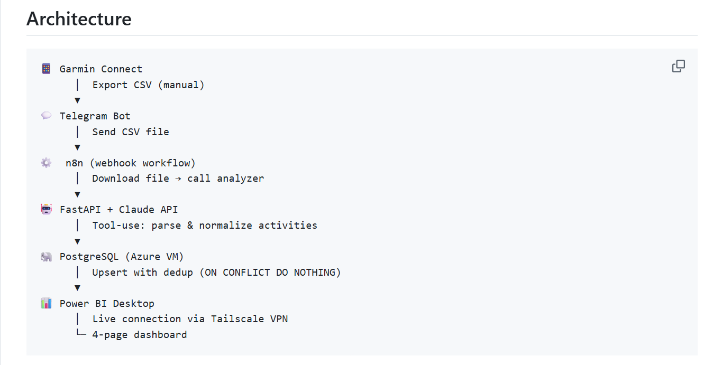
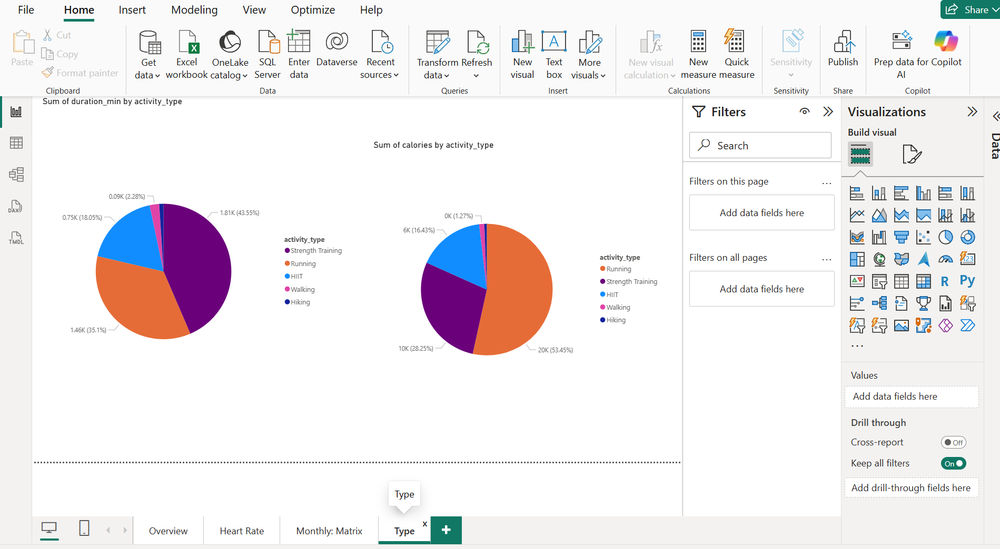
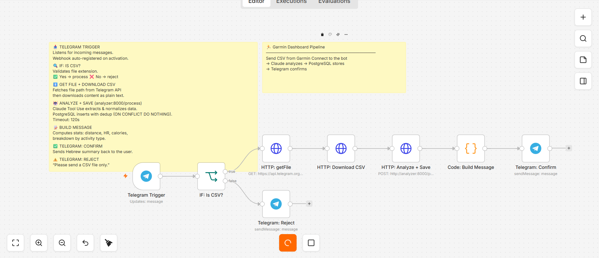
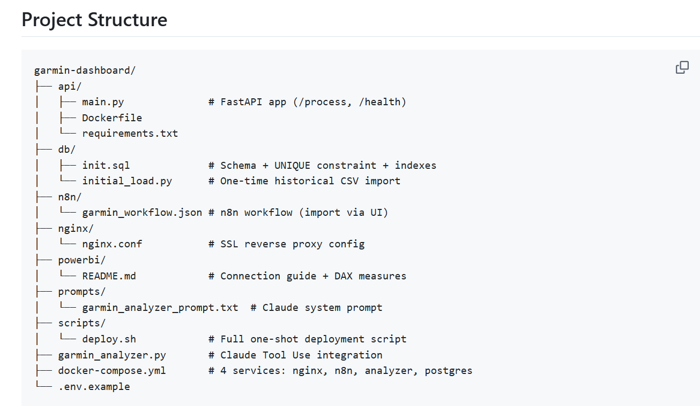

FLAGSHIP
Docker · Azure · Power BI
Garmin Fitness Analytics Pipeline
End-to-end automated fitness analytics: export a CSV from Garmin Connect, send it to Telegram — the pipeline handles everything else. Claude AI parses and normalizes activities, PostgreSQL stores them, Power BI visualizes them. Zero manual steps after the export.
Data Pipeline Flow
📱 Garmin Connect CSV
💬 Telegram Bot
⚙️ n8n Webhook (8 nodes)
🤖 FastAPI + Claude Tool Use
🐘 PostgreSQL 15
📊 Power BI (4-page dashboard)
-
▸ Docker
— 4-service Docker Compose stack (nginx · n8n · FastAPI · PostgreSQL)
deployed with a single
bash scripts/deploy.shon a fresh Azure Ubuntu VM - ▸ Cloud Deploy — Azure VM (Standard_B2s) + nginx reverse proxy + Let's Encrypt SSL with monthly auto-renewal via cron
- ▸ AI Pipeline — Claude Tool Use API guarantees schema-valid JSON for every parsed activity; handles unit conversions (miles→km, ft→m, HH:MM:SS→minutes) automatically
-
▸ Automation ROI
— re-send the same CSV any number of times; smart dedup
(
ON CONFLICT DO NOTHING) means zero duplicate rows, zero cleanup work - ▸ Secure BI — Power BI connects to PostgreSQL over Tailscale VPN; no database port exposed to the internet
Python
FastAPI
Claude API · Tool Use
n8n
PostgreSQL 15
Power BI · DAX
Docker Compose
Azure VM
nginx · Let's Encrypt
Tailscale VPN
Screenshots




Click any screenshot to expand